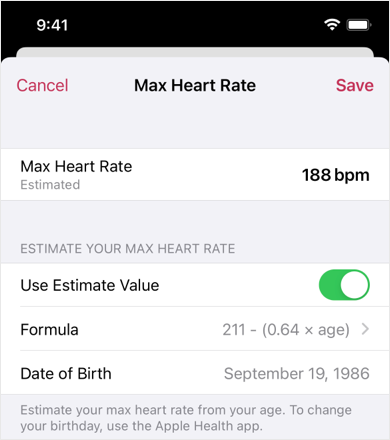

Help
Exercise Intensity and Max Heart Rate
Exercise Intensity is calculated by percentage of maximum heart rate. (%HRmax, %MHR)
You can change the max heart in Settings > HEART RATE ZONES > Max Heart Rate.

1. Use Estimate

The max heart rate is calculated with your age.
You can specify the formula to use.Please check references for understanding of these formulas.
The app uses the date of birth of the Apple Health.
You can change it with the Medical ID of the Health app.
If the app can't read it, check Health permissions.
2. Input Freely
You can set the max heart rate freely.
Turn off the "Use Estimate Value" switch and adjust it with - / +.
References
- Wikipedia: Heart rate > Maximum heart rate
- The New York Times: Ask Well: Maximal Heart Rate
- The New York Times: Overestimating How Hard We Exercise
- NCBI: Age-predicted maximal heart rate in healthy subjects: The HUNT fitness study.